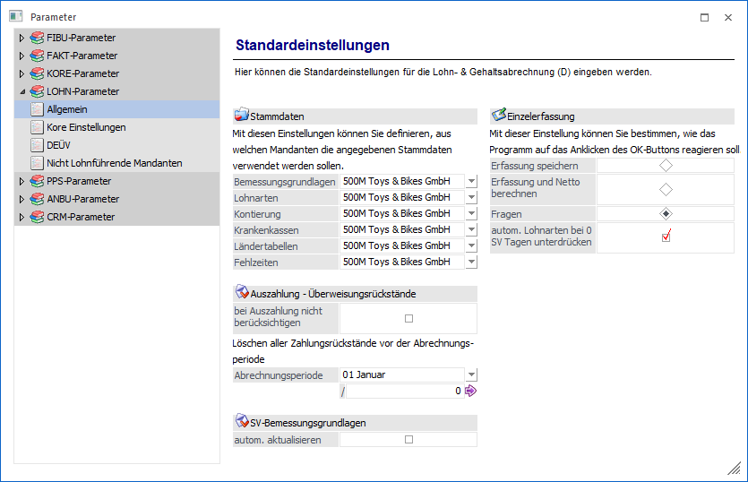

Stammdaten
Legen Sie hier fest, auf welchen Mandanten Sie zugreifen, um die mandantenübergreifenden Stammdaten festzulegen. Diese Stammdaten sind mandantenunabhängig und brauchen nur einmal aufgenommen werden, um für mehrere Mandanten nutzbar zu sein.
Änderungen dieser Stammdaten können von allen Mandanten vorgenommen werden, die auf diese Stammdaten zugreifen und stehen auch diesen Mandanten automatisch zur Verfügung. Der Mandant auf den zugegriffen wird, sollte auf sich selbst verweisen.
ü Bemessungsgrundlagen
Die
Bemessungsgrundlagen beinhalten grundlegende Schlüsselungen, wie die
Beitragsbemessungsgrenzen für die Sozialversicherung, die Beitragssätze für die RV, AV und PV,
die Bezugsgröße und Steuerwerte mit Prozentsätzen für die Pauschalversteuerung. Wählen Sie hier
den Mandanten aus, auf dessen Bemessungen zugegriffen werden soll.
ü Lohnarten
Wählen Sie hier den
Mandanten aus, auf dessen Lohnarten zugegriffen werden soll.
ü Kontierung
Über die Kontierung
werden die Sachkonten, die bei einer Integration in die WinLine FIBU
angesprochen werden, definiert. Wählen Sie hier den Mandanten aus, auf dessen
Kontierung zugegriffen werden soll.
ü Krankenkassen
Wählen Sie hier
den Mandanten aus, auf dessen Krankenkassen zugegriffen werden soll.
ü Ländertabellen
Wählen Sie hier
den Mandanten aus, auf dessen Ländertabellen zugegriffen werden soll.
ü Fehlzeiten
Wählen Sie hier den
Mandanten aus, auf dessen Fehlzeiten zugegriffen werden soll.
Empfehlung
Um sicher zu stellen, dass alle Mandanten mit den gleichen Grundlagen bemessen werden, empfehlen wir Ihnen, immer auf den gleichen Mandanten zu verweisen. Sie können später im WinLine LOHN unterhalb der Mandanten verschiedene Betriebe einrichten. Auch für Steuerberater wäre dieses zu empfehlen. Eine unterschiedliche Schlüsselung ist nur nötig, wenn mit der Installation mehrere völlig voneinander getrennte Mandanten abgerechnet werden sollen (ASP-Server).
Einzelerfassung
Hier kann definiert werden, welche Funktion durch Anklicken des OK-Buttons bzw. durch Drücken der F5-Taste aufgerufen werden soll. Dabei gibt es 3 Möglichkeiten:
ü Erfassung Speichern
Durch
Drücken der F5-Taste werden die Erfassungszeilen des AN, der gerade bearbeitet
wurde, gespeichert. Außerdem wird automatisch die nächste AN-Nummer (in
alphanumerischer Reihenfolge) vorgeschlagen, die aktiv gesetzt ist.
Beispiel
AN-Nr. 25 und 28 sind auf aktiv gesetzt, AN-Nr. 26 und 27 sind inaktiv gesetzt. Wurde AN-Nr. 25 bearbeitet und mit F5 gespeichert, wird als nächstes die AN-Nr. 28 vorgeschlagen.
ü Erfassung und Netto
berechnen
Durch Drücken der F5-Taste werden die Erfassungszeilen des AN, der
gerade bearbeitet wurde, gespeichert und es wird auch gleich die Abrechnung
durchgeführt, wobei auch der Abrechnungsbeleg gedruckt wird. Danach wird
automatisch die nächste AN-Nummer (in alphanumerischer Reihenfolge)
vorgeschlagen, die aktiv gesetzt ist.
ü Fragen
Wenn die F5-Taste
gedrückt wird, wird ein Fenster geöffnet, in dem 3 Möglichkeiten angeboten
werden:
Speichern
Es werden nur die Erfassungszeilen
gespeichert.
Abrechnen
Es wird eine Abrechnung
durchgeführt
Abbrechen
Man gelangt wieder in das
Erfassungsfenster zurück.
Auszahlung - Überweisungsrückstände
Mit dieser Einstellung kann eingestellt werden, ob für diesen Mandanten die Überweisungsrückstände verwaltet werden sollen.
Ø bei Auszahlung nicht berücksichtigen
Wird diese Option gewählt, werden die Überweisungsrückstände bei der Auszahlung nicht berücksichtigt.
Ø Löschen aller Zahlungsrückstände vor der Abrechnungsperiode
Hier können Sie alte vorliegende Zahlungsrückstände löschen.
SV-Bemessungsgrundlagen
Ø Automat. Aktualisieren
Wird diese Option aktiviert, wird ein automatisches Update der Bemessungen monatlich durchgeführt. Die Aktualisierung erfolgt dann entsprechend beim Monatswechsel. Sie erhalten dazu beim Monatswechsel einen Hinweis.
Wenn Sie diese Funktion aktiviert haben, ist eine manuelle Änderung der SV-Werte im Bemessungsgrundlagenstamm für manuelle Änderungen gesperrt.